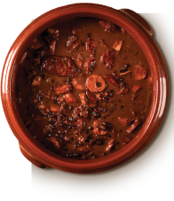

Feijoada
Feijoada is a typical dish of Rio de Janeiro and is widely consumed throughout Brazil. Despite being a dish with many variations, the typical complete feijoada is one that takes all the salted meats (rib, assorted sausages, jerked meat, foot, ear, tail, loin, bacon) and it is served with orange slices, cabbage braised in garlic, rice and farofa.